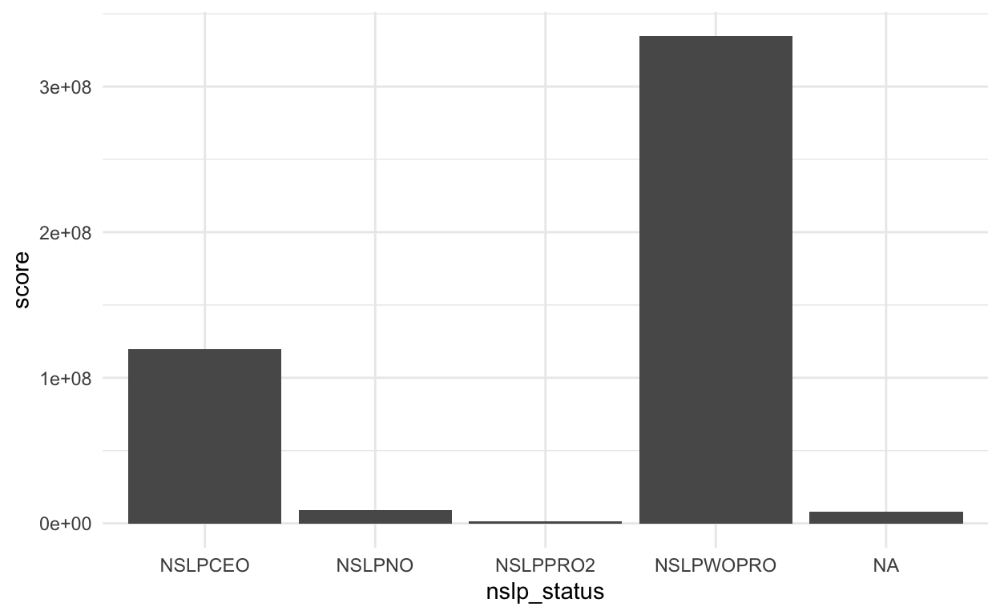
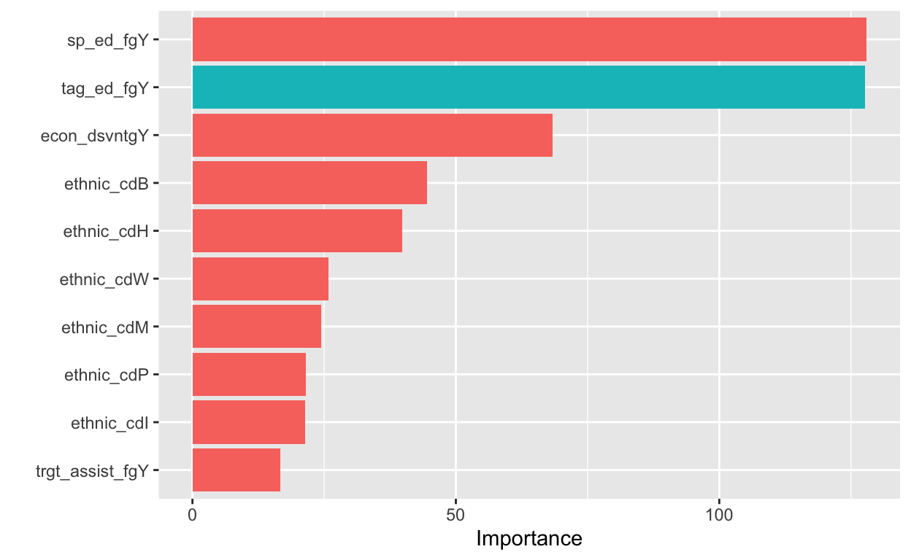

In this post, we will discuss how we select predictors used in our model to predicor individual math score. In addition to the original training set, we selected and merged a few extra predictors that are at higher levels, including staff info, school characteristic, lunch eligibility, directory and membership. The exact procedure and rationale behind choosing those predictors are discussed below.
Note that this post only discuss the procedure by which we build up our training set. This post does not include details on feature enginerring. The details of building recipes can be found in each prelim fit post individually.
library(tidyverse)
library(rio)
library(vip)
library(skimr)
library(janitor)First, we read in the original training set. We then
1. Made sure that the ‘ncessch’ variable is numeric, which will be used for joinning two data sets.
2.Removed the classification variable because we are going to build a regression model.
3.Changed the NA in variables ‘lang_cd’ and ‘ayp_lep’ to something meaningful. We did this here instead of in the recipe becuase the NAs do have meaning, instead of being unknown. For example, the NAs in ‘lang_cd’ suggests that one’s first language is English, otherwise Spanish.
The meanings of each variable in the original training dataset listed below.
# Original training set
math <- import(here::here('data','train.csv')) %>%
mutate(ncessch = as.double(ncessch)) %>%
select(-classification) %>%
mutate(lang_cd = ifelse(is.na(lang_cd), "E", lang_cd),
ayp_lep = ifelse(is.na(ayp_lep), "G", ayp_lep))
dic <- import(here::here('data', 'data_dictionary.csv'))
knitr::kable(dic)| name | description |
|---|---|
| gndr | Code indicating the gender of the student (F = Female; M = Male) |
| ethnic_cd | Code representing the racial/ethnic reporting subgroup category for the student |
| A = Asian race, n | on-Hispanic |
| B = Black/African | American race, non-Hispanic |
| H = Hispanic ethn | icity |
| I = American Ind | ian/Alaskan Native race, non-Hispanic |
| M = Multi-racial, | non-Hispanic |
| P = Pacific Islan | der race, non-Hispanic |
| W = White race, n | on-Hispanic |
| attnd_dist_inst_id | ODE assigned Institution Identifier for the Attending District. The District where the student is receiving instruction and where state assessments are administered. |
| attnd_schl_inst_id | ODE assigned Institution Identifier for the Attending School. The School where the student is receiving instruction and where state assessments are administered. |
| enrl_grd | Code indicating the enrolled grade level of the student; or a grade level assigned to an ungraded student based on student age. |
| calc_admn_cd | Code describing special circumstances affecting the administration of the test. |
| Blank or 0 = no a | dministration code |
| 6 = Home schooled | / Foreign exchange / Out of state (student was allowed but not required to test) |
| tst_bnch | Code indicating the benchmark level of the administered test |
| 1B = Benchmark 1 | (grade 3) |
| 2B = Benchmark 2 | (grade 5) |
| 3B = Benchmark 3 | (grade 8) |
| G4 = Grade 4 benc | hmark |
| G6 = Grade 6 benc | hmark |
| G7 = Grade 7 benc | hmark |
| X3 = Extended Gra | de 3 |
| X4 = Extended Gra | de 4 |
| X5 = Extended Gra | de 5 |
| X6 = Extended Gra | de 6 |
| X7 = Extended Gra | de 7 |
| X8 = Extended Gra | de 8 |
| tst_valid_fg | Code describing whether the test was appropriately administered |
| Y = Yes, valid te | st |
| rit_tot | Scale Score for Total test |
| sem_tot | Standard Error of Measurement for the Total Scale Score |
| pl5b_tot | Performance Level for Benchmark (PLB) Total Score |
| 1 = Level 1 | |
| 2 = Level 2 | |
| 3 = Level 3 | |
| 4 = Level 4 | |
| 5 = Exceeds (Scie | nce only) |
| tst_dt | Date the test was taken (mm/dd/yyyy) |
| migrant_ed_fg | Indicates student participation in a program designed to assure that migratory children receive full and appropriate opportunity to meet the state academic content and student academic achievement standards. |
| ind_ed_fg | Indicates student participation in a program designed to meet the unique educational and culturally related academic needs of American Indians. |
| sp_ed_fg | Indicates student participation in an Individualized Education Plan (IEP/IFSP). |
| tag_ed_fg | Indicates student participation in a Talented and Gifted program. |
| econ_dsvntg | Indicates student eligibility for a Free or Reduced Lunch program. |
| ayp_lep | Indicates a student who received services or was eligible to receive services in a Limited English Proficient program. |
| Blank = Not eligi | ble or served by an LEP program |
| A = First year LE | P student without ELPA |
| B = First year LE | P student with ELPA |
| E = Experienced L | EP student (more than 5 years) |
| F = Former LEP (s | tudent exited LEP program more than two years ago) — new in 2016-17 |
| M = Monitored Yea | r 1 (student exited LEP program in the prior year) — new in 2016-17 |
| N = Not eligible | or served by an LEP program |
| S = Monitored Yea | r 2 (student exited LEP program two years ago) — new in 2016-17 |
| T = Transitioning | (student exited LEP program in the prior year or two years ago) — discontinued in 2016-17 |
| W = Student exite | d an LEP program on or before May 1 of the current year |
| X = Student exite | d an LEP program after May 1 of the current year |
| Y = Student in LE | P program between 2 and 5 years |
| stay_in_dist | Indicates that the student has been enrolled for more than 50% of the days in the school year as of the first school day in May at the district where the student is resident on the first school day in May. |
| stay_in_schl | Indicates that the student has been enrolled for more than 50% of the days in the school year as of the first school day in May at the school where the student is resident on the first school day in May. |
| dist_sped | Indicates that the student was enrolled in a district special education program during the school year and received general education classroom instruction for less than 40% of the time as of the first school day in May. |
| trgt_assist_fg | Flag indicating the record is included in Title 1 Targeted Assistance for the Adequate Yearly Progress (AYP) school performance calculations. |
| acdm_yr | The last two digits of the beginning school year followed by the last two digits of the ending school year (i.e. 1415) during which the test was used for accountability reporting. |
| ayp_dist_partic | Flag indicating the record is included in the denominator of Adequate Yearly Progress (AYP) district participation calculations. |
| ayp_schl_partic | Flag indicating the record is included in the denominator of Adequate Yearly Progress (AYP) school participation calculations. |
| ayp_dist_prfrm | Flag indicating the record is included in the denominator of Adequate Yearly Progress (AYP) district performance calculations. |
| ayp_schl_prfrm | Flag indicating the record is included in the denominator of Adequate Yearly Progress (AYP) school performance calculations. |
| rc_dist_partic | Flag indicating the record is included in the denominator of Report Card (RC) district participation calculations. |
| rc_schl_partic | Flag indicating the record is included in the denominator of Report Card (RC) school participation calculations. |
| rc_dist_prfrm | Flag indicating the record is included in the denominator of Report Card (RC) district performance calculations. |
| rc_schl_prfrm | Flag indicating the record is included in the denominator of Report Card (RC) school participation calculations. |
| partic_dist_inst_id | ODE assigned Institution Identifier for the Accountable District. The Resident District where the student was enrolled on the first school day in May. |
| partic_schl_inst_id | ODE assigned Institution Identifier for the Accountable School. The Resident School where the student was enrolled on the first school day in May. |
| srt_tst_typ | Code indicating the type of test administration |
| T = Standard ELA, | Math, or Science |
| X = Extended ELA, | Math, or Science |
| lang_cd | Code indicating the language of the test |
| blank = English | |
| S = Spanish | |
| tst_atmpt_fg | Code describing whether the test was attempted |
| P = Partial attem | pt (fewer than 5 CAT or no PT items answered on ELA & Math) |
| Y = Yes, attempte | d test |
| grp_rpt_dist_partic | Flag indicating the record is included in the denominator of Group Report district participation calculations. |
| grp_rpt_schl_partic | Flag indicating the record is included in the denominator of Group Report school participation calculations. |
| grp_rpt_dist_prfrm | Flag indicating the record is included in the denominator of Group Report district performance calculations. |
| grp_rpt_schl_prfrm | Flag indicating the record is included in the denominator of Group Report school participation calculations. |
Next we imported multiple extra datasets from https://nces.ed.gov/ccd/files.asp#Fiscal:2,LevelId:7,SchoolYearId:32,Page:1. We extracted certain predictors from these dataset and merged them to the original training set. The details and rationales are discribed below.
Through reading the dictionaries on the varaible names (i.e., documentations), we choose the number of teachers in the STAFF data set. We also select ‘ncessch’ for data joining purpose.
# add in extra data
# 1) staff
staff <- import(here::here('data','extra_data','staff','ccd_sch_059_1718_l_1a_083118.csv')) %>%
filter(ST == "OR") %>%
select(NCESSCH, TEACHERS) %>% # Teachers: number of teachers (numeric)
janitor::clean_names() %>%
mutate(ncessch = as.double(ncessch))We then left join the original training set (i.e., math) with the selected staff data set by the variable ‘ncessch’. We repeat this left join step for each data set. Thus the repeated step would not be specified below.
# join math and staff by ncessch
df <- math %>%
left_join(staff)Merely reading the documentation on this dataset did not help us make sense of which variable we should select. Thus, we made some plots to visualize which categorical predictors in the school-characteristic dataset have influence on individual math score. That is, the averaged math scores differ across different groups in a given categorical predictor.
# 2) scool characteristics
# clean the school characteristic dataset
schoolDf <- import(here::here('data','extra_data','school_characteristics','ccd_sch_129_1718_w_1a_083118.csv'))%>%
filter(ST == "OR") %>%
janitor::clean_names() %>%
mutate(ncessch = as.double(ncessch)) %>%
modify_if(is.character, as.factor)
# Merge with the full dataset
fullDf <- left_join(math, schoolDf, by= "ncessch") %>%
select(score, colnames(schoolDf))
# Plot bar graph to explore the data
expl <- names(fullDf[,2:21])
# func for map
explore_fun <- function(x, y) {
ggplot(fullDf, aes(x = .data[[x]], y = .data[[y]]) ) +
geom_bar(stat="identity") +
theme_minimal()
}
elev_plots <- map(expl, ~explore_fun(.x, "score"))We explored all variables in the School Characteristic Dataset, stored in the ‘elev_plots’ variable the chunk above. For demonstration purpose, we only showed one barplot for one of the variables we chose.
We chose to select the variable ‘nslp_status’ because the mean of individual math scores differ across different groups in this variable, as illustrated below.
elev_plots[17]
[[1]]
Given the criterion discribed above, we eventually chose variables ‘TITLE1_STATUS’, indicating title 1 status, ‘NSLP_STATUS’, indicating national school lunch program and ‘Virtual’, indicating school virtual status
school_char <- import(here::here('data','extra_data','school_characteristics','ccd_sch_129_1718_w_1a_083118.csv')) %>%
filter(ST == "OR") %>%
select(NCESSCH, TITLEI_STATUS, NSLP_STATUS, VIRTUAL) %>%
janitor::clean_names() %>%
mutate(ncessch = as.double(ncessch))
# join df and school_char by ncessch
df <- df %>%
left_join(school_char)Here, we basically followed the feature selection procedure we were shown in class, selecting the type of lunch program (i.e., LUNCH_PROGRAM) and the number of student in each lunch program (i.e.,STUDENT_COUNT). We then transformed the data form from long to wide, thus each unique ncessch id has its own row with different columns being differnt lunch programs and the cells are the counts of students. Followed the class procedure, from online dataset we extracted the number of student in each ncessch. Using the two student count, we calculated the proportion of free lunch (i.e., free_lunch_prp) and the proportion of reduced lunch (i.e., reduced_lunch_prop)
# 3) lunch eligibility
lunch_elig <- import(here::here('data','extra_data','lunch_program_eligibility','ccd_sch_033_1718_l_1a_083118.csv')) %>%
filter(ST == "OR") %>%
select(NCESSCH, LUNCH_PROGRAM, STUDENT_COUNT) %>%
janitor::clean_names() %>%
select(ncessch, lunch_program, student_count) %>%
mutate(student_count = replace_na(student_count, 0)) %>%
pivot_wider(names_from = lunch_program,
values_from = student_count) %>%
janitor::clean_names() %>%
mutate(ncessch = as.double(ncessch))
stu_counts <- import("https://github.com/datalorax/ach-gap-variability/raw/master/data/achievement-gaps-geocoded.csv",
setclass = "tbl_df") %>%
filter(state == "OR" & year == 1718) %>%
count(ncessch, wt = n) %>%
mutate(ncessch = as.double(ncessch))
lunch_elig <- left_join(lunch_elig, stu_counts)
lunch_elig <- lunch_elig %>%
mutate(free_lunch_prop = free_lunch_qualified / n,
reduced_lunch_prop = reduced_price_lunch_qualified / n) %>%
select(ncessch, ends_with("prop"))
df <- df %>%
left_join(lunch_elig)Through reading the documentation for the dataset, we choose the varaibles indicating the type of school (i.e., SCH_TYPE_TEXT) and whether the school is a charter school (i.e., CHARTER_TEXT)
# 4) directory
directory <- import(here::here('data','extra_data','directory','ccd_sch_029_1718_w_1a_083118.csv')) %>%
filter(ST == "OR") %>%
select(NCESSCH, SCH_TYPE_TEXT, CHARTER_TEXT) %>%
janitor::clean_names() %>%
mutate(ncessch = as.double(ncessch))
df <- df %>%
left_join(directory)Here, we basically followed the feature selection procedure we were shown in class, selecting the school name (i.e., sch_name) and the two Ids for joinning data.
# 5) membership
sheets <- readxl::excel_sheets(here::here('data','extra_data','fallmembershipreport_20192020.xlsx'))
ode_schools <- readxl::read_xlsx(here::here('data','extra_data','fallmembershipreport_20192020.xlsx'),
sheet = sheets[4])
ethnicities <- ode_schools %>%
select(attnd_schl_inst_id = `Attending School ID`,
attnd_dist_inst_id = `Attending District Institution ID`,
sch_name = `School Name`,
contains('%')) %>%
janitor::clean_names()
names(ethnicities) <- gsub('x2019_20_percent', 'p', names(ethnicities))Here we join the membership dataset with the merged df dataset by the two Ids.
df <- df %>%
left_join(ethnicities) We first changed all character variables into factors and then used {skimr} to get a sense of all predictors we have in the data set.
df <- df%>%
modify_if(is.character, as.factor)
(df_skim <- skim(df))| Name | df |
| Number of rows | 189426 |
| Number of columns | 55 |
| _______________________ | |
| Column type frequency: | |
| factor | 34 |
| logical | 1 |
| numeric | 20 |
| ________________________ | |
| Group variables | None |
Variable type: factor
| skim_variable | n_missing | complete_rate | ordered | n_unique | top_counts |
|---|---|---|---|---|---|
| gndr | 0 | 1.00 | FALSE | 2 | M: 97016, F: 92410 |
| ethnic_cd | 0 | 1.00 | FALSE | 7 | W: 115932, H: 45882, M: 11895, A: 7695 |
| tst_bnch | 0 | 1.00 | FALSE | 6 | G4: 32773, 2B: 32771, G6: 31639, 1B: 31512 |
| tst_dt | 0 | 1.00 | FALSE | 71 | 5/2: 14230, 5/2: 14023, 5/2: 13696, 5/1: 11593 |
| migrant_ed_fg | 0 | 1.00 | FALSE | 2 | N: 184233, Y: 5193 |
| ind_ed_fg | 61 | 1.00 | FALSE | 3 | N: 187195, Y: 2165, y: 5 |
| sp_ed_fg | 61 | 1.00 | FALSE | 2 | N: 163771, Y: 25594 |
| tag_ed_fg | 463 | 1.00 | FALSE | 2 | N: 178113, Y: 10850 |
| econ_dsvntg | 531 | 1.00 | FALSE | 2 | Y: 108853, N: 80042 |
| ayp_lep | 0 | 1.00 | FALSE | 11 | G: 151339, F: 15646, Y: 7913, E: 6303 |
| stay_in_dist | 463 | 1.00 | FALSE | 2 | Y: 184313, N: 4650 |
| stay_in_schl | 463 | 1.00 | FALSE | 2 | Y: 183040, N: 5923 |
| dist_sped | 463 | 1.00 | FALSE | 2 | N: 187526, Y: 1437 |
| trgt_assist_fg | 470 | 1.00 | FALSE | 3 | N: 180915, Y: 7980, y: 61 |
| ayp_dist_partic | 0 | 1.00 | FALSE | 2 | Y: 188895, N: 531 |
| ayp_schl_partic | 0 | 1.00 | FALSE | 2 | Y: 187460, N: 1966 |
| ayp_dist_prfrm | 0 | 1.00 | FALSE | 2 | Y: 183639, N: 5787 |
| ayp_schl_prfrm | 0 | 1.00 | FALSE | 2 | Y: 181097, N: 8329 |
| rc_dist_partic | 0 | 1.00 | FALSE | 2 | Y: 188895, N: 531 |
| rc_schl_partic | 0 | 1.00 | FALSE | 2 | Y: 187460, N: 1966 |
| rc_dist_prfrm | 0 | 1.00 | FALSE | 2 | Y: 183639, N: 5787 |
| rc_schl_prfrm | 0 | 1.00 | FALSE | 2 | Y: 181097, N: 8329 |
| lang_cd | 0 | 1.00 | FALSE | 2 | E: 185122, S: 4304 |
| tst_atmpt_fg | 0 | 1.00 | FALSE | 2 | Y: 188758, P: 668 |
| grp_rpt_dist_partic | 0 | 1.00 | FALSE | 2 | Y: 188895, N: 531 |
| grp_rpt_schl_partic | 0 | 1.00 | FALSE | 2 | Y: 187460, N: 1966 |
| grp_rpt_dist_prfrm | 0 | 1.00 | FALSE | 2 | Y: 188039, N: 1387 |
| grp_rpt_schl_prfrm | 0 | 1.00 | FALSE | 2 | Y: 186605, N: 2821 |
| titlei_status | 3216 | 0.98 | FALSE | 3 | NOT: 95699, SWE: 79327, TGE: 11184 |
| nslp_status | 3216 | 0.98 | FALSE | 4 | NSL: 133179, NSL: 48753, NSL: 3640, NSL: 638 |
| virtual | 3216 | 0.98 | FALSE | 4 | NOT: 140151, SUP: 43250, FAC: 1406, FUL: 1403 |
| sch_type_text | 3216 | 0.98 | FALSE | 2 | Reg: 185723, Alt: 487 |
| charter_text | 3216 | 0.98 | FALSE | 2 | No: 177510, Yes: 8700 |
| sch_name | 159 | 1.00 | FALSE | 1042 | Sto: 1103, Mou: 964, Ore: 849, Hap: 800 |
Variable type: logical
| skim_variable | n_missing | complete_rate | mean | count |
|---|---|---|---|---|
| calc_admn_cd | 189426 | 0 | NaN | : |
Variable type: numeric
| skim_variable | n_missing | complete_rate | mean | sd | p0 | p25 | p50 | p75 | p100 | hist |
|---|---|---|---|---|---|---|---|---|---|---|
| id | 0 | 1.00 | 1.261905e+05 | 72879.84 | 1.000000e+00 | 6.313525e+04 | 1.260955e+05 | 1.892618e+05 | 2.52568e+05 | ▇▇▇▇▇ |
| attnd_dist_inst_id | 0 | 1.00 | 2.119070e+03 | 187.43 | 1.894000e+03 | 2.039000e+03 | 2.142000e+03 | 2.187000e+03 | 4.13100e+03 | ▇▁▁▁▁ |
| attnd_schl_inst_id | 0 | 1.00 | 1.374550e+03 | 1393.02 | 1.000000e+00 | 4.910000e+02 | 9.340000e+02 | 1.302000e+03 | 5.39200e+03 | ▇▃▁▁▁ |
| enrl_grd | 0 | 1.00 | 5.460000e+00 | 1.69 | 3.000000e+00 | 4.000000e+00 | 5.000000e+00 | 7.000000e+00 | 8.00000e+00 | ▇▅▃▃▃ |
| partic_dist_inst_id | 531 | 1.00 | 2.119860e+03 | 190.59 | 1.894000e+03 | 2.039000e+03 | 2.142000e+03 | 2.188000e+03 | 5.40100e+03 | ▇▁▁▁▁ |
| partic_schl_inst_id | 531 | 1.00 | 1.374860e+03 | 1392.47 | 1.000000e+00 | 4.940000e+02 | 9.340000e+02 | 1.302000e+03 | 5.40100e+03 | ▇▃▁▁▁ |
| score | 0 | 1.00 | 2.498990e+03 | 115.83 | 1.601000e+03 | 2.421000e+03 | 2.498000e+03 | 2.576000e+03 | 3.55000e+03 | ▁▂▇▁▁ |
| ncessch | 3216 | 0.98 | 4.106934e+11 | 391895157.93 | 4.100003e+11 | 4.102940e+11 | 4.107500e+11 | 4.110520e+11 | 4.11365e+11 | ▆▃▅▇▃ |
| lat | 3400 | 0.98 | 4.477000e+01 | 1.02 | 4.201000e+01 | 4.417000e+01 | 4.525000e+01 | 4.550000e+01 | 4.61800e+01 | ▂▁▂▅▇ |
| lon | 3400 | 0.98 | -1.225200e+02 | 1.19 | -1.245000e+02 | -1.230400e+02 | -1.228200e+02 | -1.225400e+02 | -1.16940e+02 | ▅▇▁▁▁ |
| teachers | 3216 | 0.98 | 2.777000e+01 | 13.23 | 2.000000e+00 | 2.009000e+01 | 2.595000e+01 | 3.333000e+01 | 1.43270e+02 | ▇▃▁▁▁ |
| free_lunch_prop | 3216 | 0.98 | 3.600000e-01 | 0.24 | 0.000000e+00 | 1.900000e-01 | 2.900000e-01 | 4.900000e-01 | 4.38000e+00 | ▇▁▁▁▁ |
| reduced_lunch_prop | 3216 | 0.98 | 6.000000e-02 | 0.04 | 0.000000e+00 | 4.000000e-02 | 5.000000e-02 | 7.000000e-02 | 1.21000e+00 | ▇▁▁▁▁ |
| p_american_indian_alaska_native | 159 | 1.00 | 1.000000e-02 | 0.04 | 0.000000e+00 | 0.000000e+00 | 1.000000e-02 | 1.000000e-02 | 8.80000e-01 | ▇▁▁▁▁ |
| p_asian | 159 | 1.00 | 4.000000e-02 | 0.07 | 0.000000e+00 | 1.000000e-02 | 1.000000e-02 | 4.000000e-02 | 6.20000e-01 | ▇▁▁▁▁ |
| p_native_hawaiian_pacific_islander | 159 | 1.00 | 1.000000e-02 | 0.01 | 0.000000e+00 | 0.000000e+00 | 0.000000e+00 | 1.000000e-02 | 3.30000e-01 | ▇▁▁▁▁ |
| p_black_african_american | 159 | 1.00 | 2.000000e-02 | 0.04 | 0.000000e+00 | 0.000000e+00 | 1.000000e-02 | 2.000000e-02 | 5.00000e-01 | ▇▁▁▁▁ |
| p_hispanic_latino | 159 | 1.00 | 2.400000e-01 | 0.19 | 0.000000e+00 | 1.000000e-01 | 1.800000e-01 | 3.300000e-01 | 1.00000e+00 | ▇▃▂▁▁ |
| p_white | 159 | 1.00 | 6.100000e-01 | 0.20 | 0.000000e+00 | 4.500000e-01 | 6.500000e-01 | 7.700000e-01 | 1.00000e+00 | ▁▃▃▇▃ |
| p_multiracial | 159 | 1.00 | 7.000000e-02 | 0.03 | 0.000000e+00 | 4.000000e-02 | 7.000000e-02 | 8.000000e-02 | 3.50000e-01 | ▇▆▁▁▁ |
After skimming the data, we noticed that the variable ‘calc_admn_cd’ has all NAs, thus we removed this varaible. The remaining dataframe includes in total 56 predicors, among which 34 are categorical and 22 are numerical.
df <- df %>%
select(-calc_admn_cd)Then we decided to have a closer look to the distribution of all the categorical variables using {janitor}
factor_vars <-
df_skim %>%
filter(skim_type == 'factor') %>%
select(skim_variable)
factor_vars$skim_variable[-34] %>%
map(~tabyl(df,.))
[[1]]
gndr n percent
F 92410 0.4878422
M 97016 0.5121578
[[2]]
ethnic_cd n percent
A 7695 0.040622723
B 4150 0.021908291
H 45882 0.242215958
I 2442 0.012891578
M 11895 0.062794970
P 1430 0.007549122
W 115932 0.612017358
[[3]]
tst_bnch n percent
1B 31512 0.1663552
2B 32771 0.1730016
3B 30257 0.1597299
G4 32773 0.1730122
G6 31639 0.1670256
G7 30474 0.1608755
[[4]]
tst_dt n percent
2/16/2018 0:00:00 1 5.279106e-06
2/26/2018 0:00:00 1 5.279106e-06
2/28/2018 0:00:00 1 5.279106e-06
2/6/2018 0:00:00 14 7.390749e-05
2/7/2018 0:00:00 15 7.918660e-05
2/8/2018 0:00:00 1 5.279106e-06
3/13/2018 0:00:00 6 3.167464e-05
3/14/2018 0:00:00 14 7.390749e-05
3/15/2018 0:00:00 39 2.058851e-04
3/16/2018 0:00:00 17 8.974481e-05
3/19/2018 0:00:00 35 1.847687e-04
3/20/2018 0:00:00 64 3.378628e-04
3/21/2018 0:00:00 82 4.328867e-04
3/22/2018 0:00:00 69 3.642583e-04
3/23/2018 0:00:00 38 2.006060e-04
3/26/2018 0:00:00 2 1.055821e-05
3/27/2018 0:00:00 7 3.695374e-05
3/5/2018 0:00:00 1 5.279106e-06
3/6/2018 0:00:00 3 1.583732e-05
3/7/2018 0:00:00 19 1.003030e-04
3/8/2018 0:00:00 12 6.334928e-05
3/9/2018 0:00:00 13 6.862838e-05
4/10/2018 0:00:00 373 1.969107e-03
4/11/2018 0:00:00 497 2.623716e-03
4/12/2018 0:00:00 618 3.262488e-03
4/13/2018 0:00:00 152 8.024242e-04
4/16/2018 0:00:00 668 3.526443e-03
4/17/2018 0:00:00 718 3.790398e-03
4/18/2018 0:00:00 903 4.767033e-03
4/19/2018 0:00:00 877 4.629776e-03
4/2/2018 0:00:00 54 2.850717e-04
4/20/2018 0:00:00 559 2.951020e-03
4/23/2018 0:00:00 688 3.632025e-03
4/24/2018 0:00:00 1338 7.063444e-03
4/25/2018 0:00:00 1538 8.119266e-03
4/26/2018 0:00:00 1504 7.939776e-03
4/27/2018 0:00:00 856 4.518915e-03
4/3/2018 0:00:00 76 4.012121e-04
4/30/2018 0:00:00 1083 5.717272e-03
4/4/2018 0:00:00 90 4.751196e-04
4/5/2018 0:00:00 178 9.396809e-04
4/6/2018 0:00:00 52 2.745135e-04
4/9/2018 0:00:00 215 1.135008e-03
5/1/2018 0:00:00 2536 1.338781e-02
5/10/2018 0:00:00 7557 3.989421e-02
5/11/2018 0:00:00 5518 2.913011e-02
5/14/2018 0:00:00 5270 2.782089e-02
5/15/2018 0:00:00 9033 4.768617e-02
5/16/2018 0:00:00 9542 5.037323e-02
5/17/2018 0:00:00 11593 6.120068e-02
5/18/2018 0:00:00 7549 3.985197e-02
5/2/2018 0:00:00 3095 1.633883e-02
5/21/2018 0:00:00 8149 4.301944e-02
5/22/2018 0:00:00 13696 7.230264e-02
5/23/2018 0:00:00 14023 7.402891e-02
5/24/2018 0:00:00 14230 7.512168e-02
5/25/2018 0:00:00 7986 4.215894e-02
5/29/2018 0:00:00 6801 3.590320e-02
5/3/2018 0:00:00 3149 1.662391e-02
5/30/2018 0:00:00 7411 3.912346e-02
5/31/2018 0:00:00 7062 3.728105e-02
5/4/2018 0:00:00 2068 1.091719e-02
5/7/2018 0:00:00 3526 1.861413e-02
5/8/2018 0:00:00 5120 2.702902e-02
5/9/2018 0:00:00 6559 3.462566e-02
6/1/2018 0:00:00 4954 2.615269e-02
6/4/2018 0:00:00 3718 1.962772e-02
6/5/2018 0:00:00 2778 1.466536e-02
6/6/2018 0:00:00 1569 8.282918e-03
6/7/2018 0:00:00 1009 5.326618e-03
6/8/2018 0:00:00 434 2.291132e-03
[[5]]
migrant_ed_fg n percent
N 184233 0.9725856
Y 5193 0.0274144
[[6]]
ind_ed_fg n percent valid_percent
N 187195 9.882223e-01 9.885406e-01
y 5 2.639553e-05 2.640403e-05
Y 2165 1.142927e-02 1.143295e-02
<NA> 61 3.220255e-04 NA
[[7]]
sp_ed_fg n percent valid_percent
N 163771 0.8645645265 0.864843
Y 25594 0.1351134480 0.135157
<NA> 61 0.0003220255 NA
[[8]]
tag_ed_fg n percent valid_percent
N 178113 0.940277470 0.94258135
Y 10850 0.057278304 0.05741865
<NA> 463 0.002444226 NA
[[9]]
econ_dsvntg n percent valid_percent
N 80042 0.422550231 0.4237381
Y 108853 0.574646564 0.5762619
<NA> 531 0.002803205 NA
[[10]]
ayp_lep n percent
A 101 0.0005331897
B 759 0.0040068417
E 6303 0.0332742073
F 15646 0.0825968980
G 151339 0.7989346763
M 163 0.0008604943
N 3824 0.0201873027
S 95 0.0005015151
W 225 0.0011877989
X 3058 0.0161435072
Y 7913 0.0417735686
[[11]]
stay_in_dist n percent valid_percent
N 4650 0.024547845 0.02460799
Y 184313 0.973007929 0.97539201
<NA> 463 0.002444226 NA
[[12]]
stay_in_schl n percent valid_percent
N 5923 0.031268147 0.03134476
Y 183040 0.966287627 0.96865524
<NA> 463 0.002444226 NA
[[13]]
dist_sped n percent valid_percent
N 187526 0.989969698 0.992395337
Y 1437 0.007586076 0.007604663
<NA> 463 0.002444226 NA
[[14]]
trgt_assist_fg n percent valid_percent
N 180915 0.9550695258 0.9574451195
y 61 0.0003220255 0.0003228265
Y 7980 0.0421272687 0.0422320540
<NA> 470 0.0024811800 NA
[[15]]
ayp_dist_partic n percent
N 531 0.002803205
Y 188895 0.997196795
[[16]]
ayp_schl_partic n percent
N 1966 0.01037872
Y 187460 0.98962128
[[17]]
ayp_dist_prfrm n percent
N 5787 0.03055019
Y 183639 0.96944981
[[18]]
ayp_schl_prfrm n percent
N 8329 0.04396968
Y 181097 0.95603032
[[19]]
rc_dist_partic n percent
N 531 0.002803205
Y 188895 0.997196795
[[20]]
rc_schl_partic n percent
N 1966 0.01037872
Y 187460 0.98962128
[[21]]
rc_dist_prfrm n percent
N 5787 0.03055019
Y 183639 0.96944981
[[22]]
rc_schl_prfrm n percent
N 8329 0.04396968
Y 181097 0.95603032
[[23]]
lang_cd n percent
E 185122 0.97727873
S 4304 0.02272127
[[24]]
tst_atmpt_fg n percent
P 668 0.003526443
Y 188758 0.996473557
[[25]]
grp_rpt_dist_partic n percent
N 531 0.002803205
Y 188895 0.997196795
[[26]]
grp_rpt_schl_partic n percent
N 1966 0.01037872
Y 187460 0.98962128
[[27]]
grp_rpt_dist_prfrm n percent
N 1387 0.007322121
Y 188039 0.992677879
[[28]]
grp_rpt_schl_prfrm n percent
N 2821 0.01489236
Y 186605 0.98510764
[[29]]
titlei_status n percent valid_percent
NOTTITLE1ELIG 95699 0.50520520 0.51393051
SWELIGSWPROG 79327 0.41877567 0.42600827
TGELGBTGPROG 11184 0.05904153 0.06006122
<NA> 3216 0.01697761 NA
[[30]]
nslp_status n percent valid_percent
NSLPCEO 48753 0.25737227 0.261817303
NSLPNO 3640 0.01921595 0.019547822
NSLPPRO2 638 0.00336807 0.003426239
NSLPWOPRO 133179 0.70306610 0.715208635
<NA> 3216 0.01697761 NA
[[31]]
virtual n percent valid_percent
FACEVIRTUAL 1406 0.007422424 0.007550615
FULLVIRTUAL 1403 0.007406586 0.007534504
NOTVIRTUAL 140151 0.739872034 0.752650234
SUPPVIRTUAL 43250 0.228321350 0.232264647
<NA> 3216 0.016977606 NA
[[32]]
sch_type_text n percent valid_percent
Alternative School 487 0.002570925 0.002615327
Regular School 185723 0.980451469 0.997384673
<NA> 3216 0.016977606 NA
[[33]]
charter_text n percent valid_percent
No 177510 0.93709417 0.95327856
Yes 8700 0.04592823 0.04672144
<NA> 3216 0.01697761 NALast, we decided to use {vip} to explore the importance for each predictor. To do this we need to first remove all NAs, and categorical predictors that only have one level.
df_forvip <- df %>%
drop_na()
df_forvip <- df_forvip %>%
select(-ayp_dist_partic , -rc_dist_partic, -grp_rpt_dist_partic)
vip(lm(score ~ ., df_forvip), mapping = aes(fill = Sign))
We saved this merged dataframe as our training set. The exact same procedure will be applied to the testing set, for which we will generate the predictions using our finalized model.
write.csv(df, 'final_merged_train.csv', row.names = F)